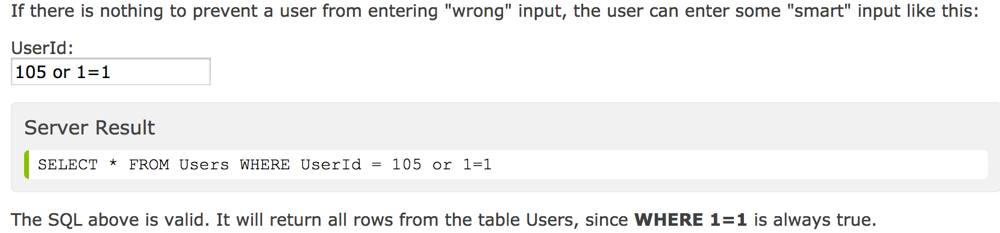
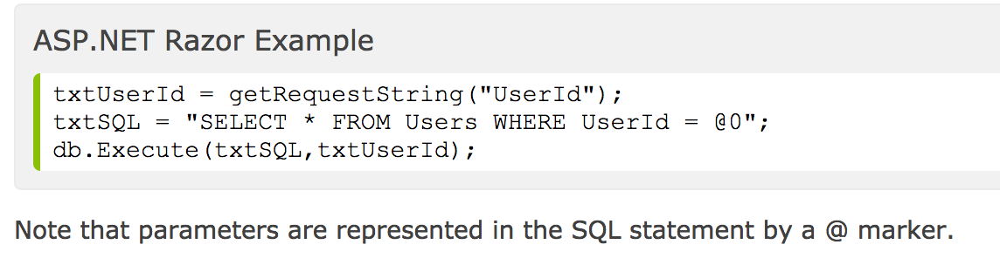

SQL Injection
November 4th, 2014
A couple of weeks ago I was watching the documentary “Hackers Wanted” and remember being particularly blown away by one of the hackers they profiled. His name is Adrian Lamo. In 2003 he was arrested for hacking big well known companies such as Yahoo, AOL Time Warner, Microsoft, and the New York Times.
There were two things that really fascinated me about Adrian. He never maliciously hacked any of the sites he visited. He simply has an insatiable curiosity for how things work and enjoys exploiting security breaches when he finds them and then telling the companies that they need to fix these breaches. The more amazing thing is how he hacked these sites. I always thought that hacking required super sophisticated algorithms and top of the line hardware, but Adrian, also known as “the homeless hacker”, would go to a local Kinkos and hack the site by simply clicking around and finding security holes.
I now realize he was probably using a technique called SQL injection. SQL injection is a code injection technique, used to attack data-driven applications, in which malicious SQL statements are inserted into an entry field for execution (e.g. to dump the database contents to the attacker). I am new to SQL, but I am going to do my best to explain how SQL injection works in an extremely non-technical kind of way.
SQL injection was first discussed publicly in 1998. In a 2012 study, security company Imperva reported that the average web application received 4 attack campaigns per month. In 2013 SQL injection was rated the number one attack on the OWASP (Open Web Application Security Project) top 10.
SQL is a database language that can be used to display data on a web page. Since SQL statements are text only, it is easy to write a little bit of computer code to dynamically change SQL statements to provide the user with selected data. This data can include sensitive information such as passwords and credit card numbers.
There are several different ways SQLI can be executed, but I am going to try my best to explain one of the easier to understand cases which is SQL Injection Based on 1=1 is Always true. First let’s discuss what we know about SQL. SQL stores its data in tables, and each table has an id column that gives each instance a unique primary key value. If a hacker can access these id values they can gain access to the entire table.
The following example is from W3Schools:
Lets break down the SQL code here:
- SELECT * -- select all files
- FROM Users -- from the database table named Users
- WHERE UserId = 105 or 1=1 -- return all instances of column UserId that have a value of 105 or 1=1
Since 1=1 is always true, this will return all rows from the table Users. If the table has other columns of information such as Password or credit card number, this information would be included in the rows that are returned.
The only proven way to protect a website from SQL injection attacks is to use SQL parameters. These are values that are added to an SQL query at execution time, in a controlled manner. The SQL engine checks each parameter to ensure that it is correct for its column and are treated literally, and not as part of the SQL to be executed. Here is another example from W3Schools:
That covers the very basics of one of the top website vulnerabilities and how to avoid it. Hopefully this blog post has sparked some curiosity in SQL and SQL injection, and you continue to explore this rather complicated topic.
Thanks for reading.